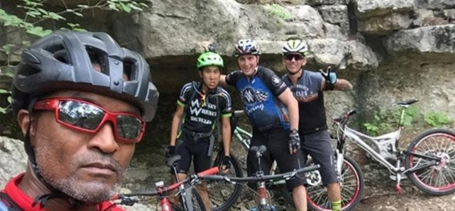
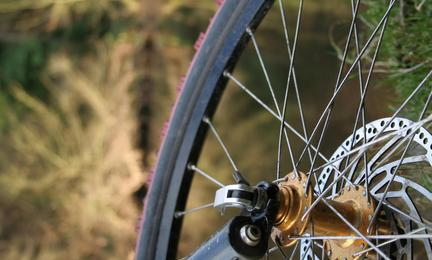

MONKEY WRENCH
BICYCLE REPAIR


ABOUT US
Monkey Wrench Bicycle Repair is a local, independently owned bicycle repair shop offering full mechanical service for the cycling community.
We constantly strive to offer quality service and expertise to exceed our customers’ expectations. We support the local cycling community and foster its growth in the Austin area.
SPECIALTIES
At Monkey Wrench Bicycle Repair, we service all makes and models of bicycles.... from 29'er full suspension mountain bikes to your classic Peugeot.
We however do not service electric (E-bikes), gas powered bikes, recumbents, and trikes.